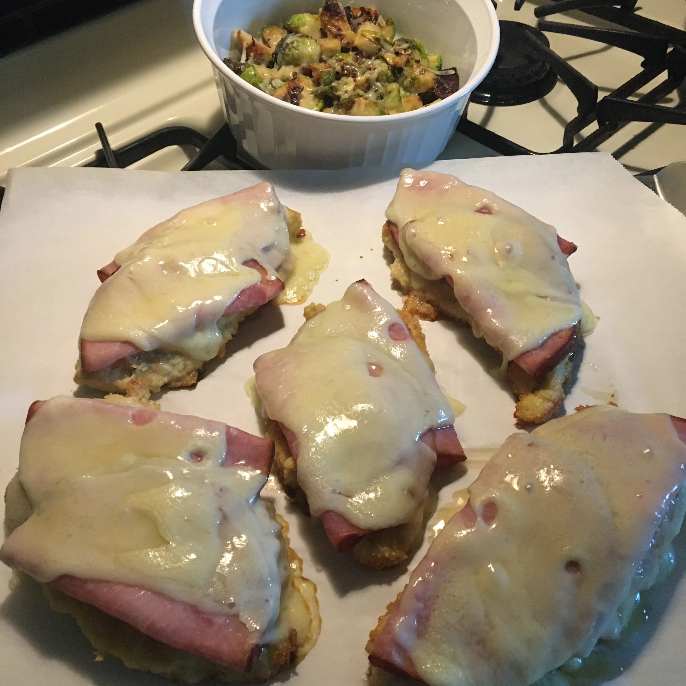

Chicken Cordon Bleu

Ingredients
- 1 pound of chicken cutlets
- salt and pepper to taste
- 2 eggs
- 1 teaspoon Dijon mustard
- 2/3 cup of almond flour
- 1/3 cup of grated Parmesan cheese
- 1/2 teaspoon of garlic powder
- 1/4 cup of avocado oil
- 1/4 pound of shaved deli ham
- 1 cup of shredded Swiss cheese
Steps
- Preheat the oven to 375 degrees F (190 degrees C). Season chicken cutlets with salt and pepper; set aside.
- Whisk eggs and Dijon mustard together in a shallow bowl. Combine almond flour, Parmesan cheese, and garlic powder in a separate shallow bowl. Dip chicken cutlets into egg mixture, letting excess drip off. Dredge with almond flour mixture, then set on a plate.
- Heat oil in a large skillet over medium-high heat. Add chicken cutlets and cook until golden brown, 3 to 4 minutes. Flip over and cook until chicken is no longer pink inside and the juices are running clear, 3 to 4 minutes more.
- Place chicken cutlets on a baking sheet. Top with slices of ham and cover with shredded Swiss cheese.
- Bake in the preheated oven until cheese has melted, 4 to 5 minutes. Serve immediately.